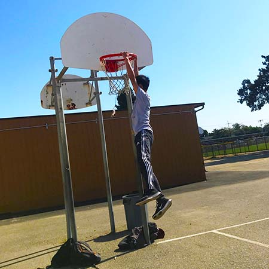
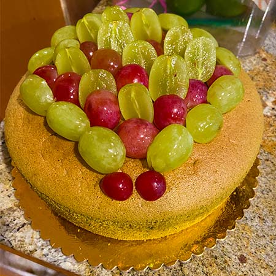
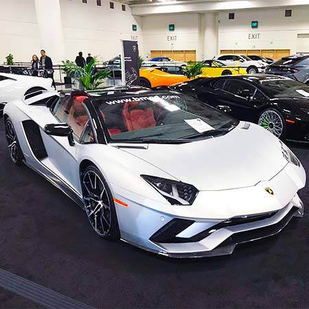
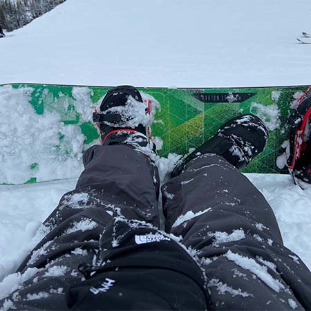
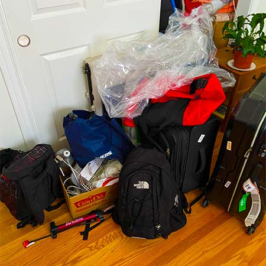

BUT THERE'S ALWAYS A FIRST TIME FOR EVERYTHING
- Melissa De la Cruz

First time defines as the first time you experience something you have never tried before in your life. It could range from first time kissing someone you love to skydiving(you're insane). Everyone in the world would have a chance to experience something they had never experienced before. It is part of life and the fun part is that countless possibilities could happen. The following are my first-time experiencing something new and I have images to back me up.
This is an Image of me dunking a basketball on my Senior year. At first you will think I must've big hop to jump that high. But what really happened is I pulled my self up using the net and ask my friend to hand me a basketball to finish my first unofficial dunk.
The hidden message of this image is that it was my first time baking a cake for my father's birthday. It was during the period of Covid so we didn't want to take the risk of going out to buy a cake so I made this matcha cake with fruit on top to celebrate his birthday.
I'm always in love with cars especially sports cars so going to a car show has been my dream as a kid. In my Freshman year of college, I finally had the chance to go to a car show at SanFransico with my brother. It was so worth it, I saw so many sports cars and got to sit in some of them too. My favorite car is this Lamborghini Huracan Spyder. The shape of the car is just sleek and the fact that it is convertible is just a perfect dream car.
I went to Reno a couple of years ago with my family. It was my first time snowboarding and also my first time seeing snow in person. Snowboarding was not easy at all, I fell so many times and this image was taken after one of my big falls. I sat there for so long and suddenly decided to take a picture of my snowboard.
This year is my first time moving out to live without my parents because of University. I was very excited because I get to do whatever I want, like literally whatever I want. I know I'm going to move out one day eventually to start my own family so this is a great experience. However, I only get to enjoy this for one year due to Covid because I had to stay home in my Junior year. This image was taken before I pack everything in my car as a way to mark my milestone.
